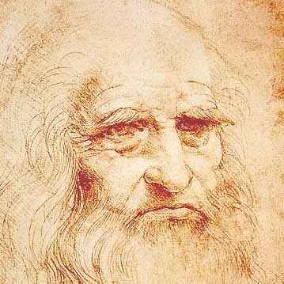

Artists
-
Leonardo da Vinci (1452–1519)
Impact: Renaissance humanism, mastery in anatomy, and the study of light and shadow.
Change: Da Vinci was a pioneer of the Renaissance, advancing the use of scientific observation and perspective in art. His works, like The Last Supper and Mona Lisa, introduced a more naturalistic portrayal of human figures and emotions.
-
Michelangelo (1475–1564)
Impact: High Renaissance ideals and humanism.
Change: Known for his powerful sculptures like David and his frescoes on the Sistine Chapel ceiling, Michelangelo redefined the human form in art, emphasizing muscularity and emotional depth. His works contributed to the rise of individualism in Western art.
-
Rembrandt van Rijn (1606–1669)
Impact: Mastery in light, shadow, and portraiture.
Change: Rembrandt revolutionized portraiture by emphasizing psychological depth and the use of dramatic lighting, known as chiaroscuro. He broke away from the conventional portrait norms of his time, focusing more on the inner life of his subjects.
-
Claude Monet (1840–1926)
Impact: Impressionism and the modern approach to painting.
Change: Monet’s use of color and light, particularly in works like Impression, Sunrise, led to the birth of Impressionism, which rejected detailed realism in favor of capturing fleeting moments and natural light.
-
Vincent van Gogh (1853–1890)
Impact: Expressionism, use of color and impasto technique.
Change: Van Gogh’s emotional intensity and innovative brushwork transformed the way artists viewed color and texture. His thick impasto technique, where paint is applied in heavy, expressive strokes, made a lasting impact on modern art.
-
Pablo Picasso (1881–1973)
Impact: Cubism and Modernism.
Change: Picasso, one of the co-founders of Cubism, deconstructed forms and perspectives in revolutionary ways. His work challenged traditional perspectives of space and form and was a crucial part of the development of modern art. Works like Guernica also brought political and social commentary into the art world.
-
Marcel Duchamp (1887–1968)
Impact: Dadaism and the concept of the "readymade."
Change: Duchamp questioned the very definition of art with his readymades, like Fountain (a urinal signed with a pseudonym), which challenged the notion of artistic value based on craftsmanship and instead emphasized conceptualism. He was a key figure in the Dada movement.
-
Jackson Pollock (1912–1956)
Impact: Abstract Expressionism and the act of painting.
Change: Pollock’s use of drip painting and spontaneous creation techniques revolutionized painting by focusing on the process rather than the end result. He pushed boundaries by making the artist’s action an essential part of the artwork.
-
Andy Warhol (1928–1987)
Impact: Pop Art and the commercialization of art.
Change: Warhol’s mass-production techniques, using repetition and imagery from popular culture (such as his famous Campbell's Soup Cans), blurred the lines between high art and consumer culture, challenging notions of originality, celebrity, and mass production.
-
Frida Kahlo (1907–1954)
Impact: Surrealism, feminism, and personal expression.
Change: Kahlo’s deeply personal works, which blended surrealism with Mexican folk art, explored themes of identity, gender, and pain. Her iconic self-portraits have become a symbol of empowerment and resilience, particularly for women in art.
-
Jasper Johns (1930–present)
Impact: Abstract Expressionism, Neo-Dada, and the use of symbols.
Change: Johns’s use of familiar symbols like flags and targets in his work challenged the distinction between fine art and everyday objects. His work was influential in the development of Pop Art and later Minimalism.
-
Yayoi Kusama (1929–present)
Impact: Avant-garde, pop art, and immersive installations.
Change: Kusama is known for her use of polka dots and immersive environments that often involve repetitive patterns. She has influenced the art world through her work in sculpture, performance, and installations that explore infinity, obsession, and identity.
-
Georgia O’Keeffe (1887–1986)
Impact: Modernism and abstract representation of nature.
Change: O’Keeffe’s close-up views of flowers, New Mexico landscapes, and abstract forms pushed the boundaries of abstract art while maintaining strong ties to nature and symbolism. She became a pioneering female figure in modern American art.
-
Keith Haring (1958–1990)
Impact: Graffiti, street art, and activism.
Change: Haring brought street culture into the fine art world, using graffiti-inspired symbols and figures in his work. He used his art to address social issues like AIDS, apartheid, and drug addiction, making art more accessible and socially relevant.
-
Banksy (1970s–present)
Impact: Street art and social commentary.
Change: Banksy, though his identity remains a mystery, revolutionized the art world by blurring the lines between street art and fine art. His politically charged murals and stunts (like shredding his artwork Girl with a Balloon after it was sold) have pushed street art into the mainstream art market.
Famous locations
The LouvreMusée du Louvre
75058 Paris Cedex 01
The Vatican
00120 Vatican City
Rome, Italy
The Met
1000 Fifth Avenue
82nd Street
New York, NY, 10028
Call us at 800-542-336 for more information!
